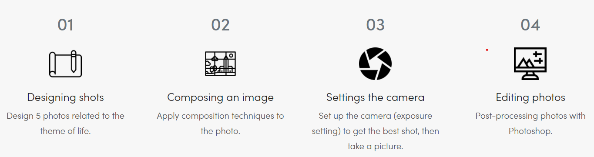

The Walls Talk
A very ancient proverb about walls is, “ walls talk” The meaning of the walls talk describe his structures and design that how old they are, and which kind of people lives here. It’s also described the mentality of the people who lives there and some memories they left. Walls shows dignity to maintain strength during your bad time, teaches us to live longer without give-up and stand like a barrier for fight from your bad. Windows shows hope of life and always open for positive light in the dark life room. But time decay everyone and everyone has a dead end.
Goal Of The Work :
To show the ability to compose, setting the camera, take and edit photographs by using Photoshop. Create high-quality and meaningful photos with life as the theme.
Technical-Asset
